Depending on where you got your computer, chances are that special characters are in completely different positions, so that's why the original shortcuts designed by Microsoft to work on an US-American keyboard do not work very well. For this purpose Zombiekeys now supports the following country specific layouts:
The problem I had with Zombie Keys is that it was originally created with an American Audience in mind (or at least with those who had American keyboard layouts) so I set out how to remedy this. This was a major undertaking as a lot of the hard coded hotkey combinations had to be reviewed for their usability due to the different location of dead keys such as ' or ~. To best visualize this I decided to use some keyboard layouts from WikiPedia, and set up 2 main flavors to get started: UK and US English. Other layouts may get added in the future - please drop me a line with suggestions.
This is the original layout, which is based on the shortcuts suggested by Microsoft
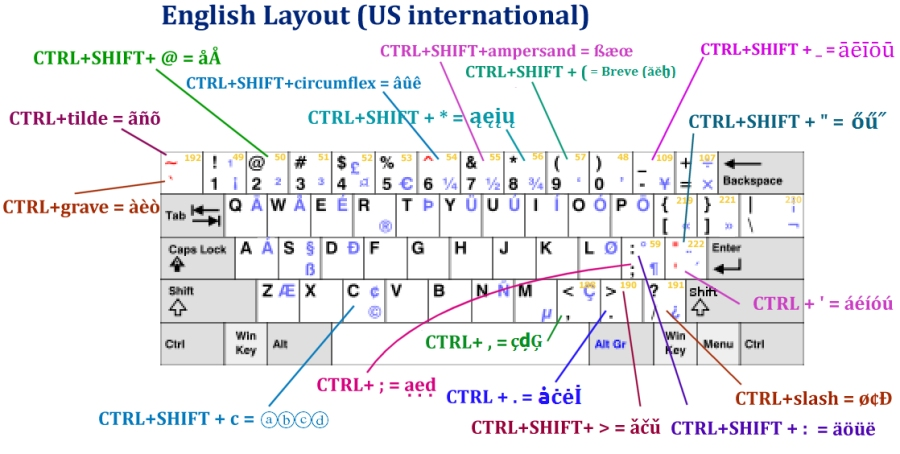
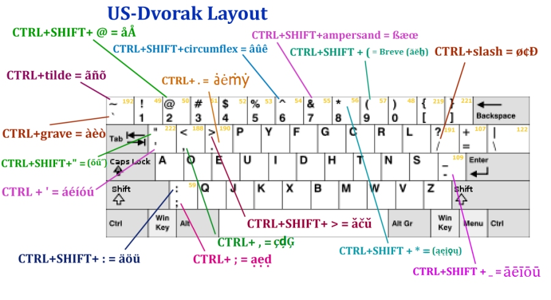
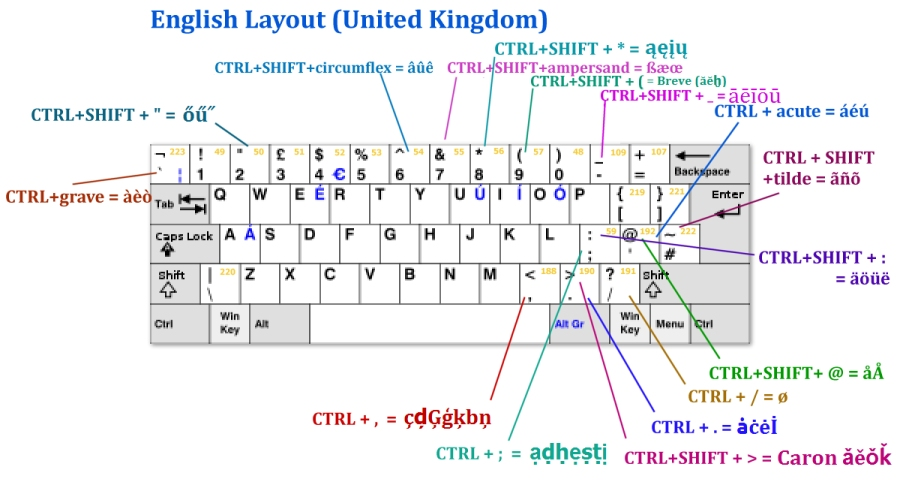
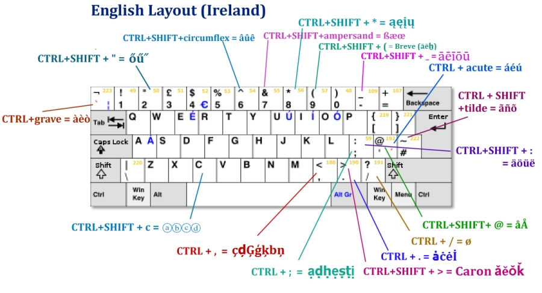
This layout is currently being prepared for inclusion in the next release
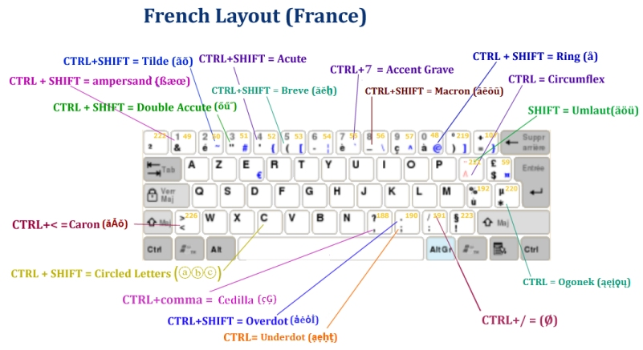
This layout is currently being prepared for inclusion in the next release
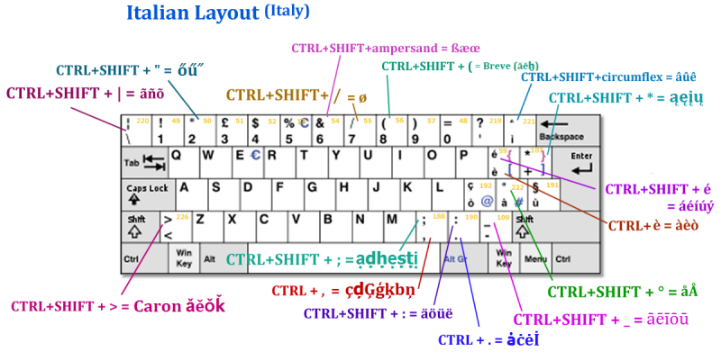
My most recently released layout - in Zombie Keys since version 2.8.
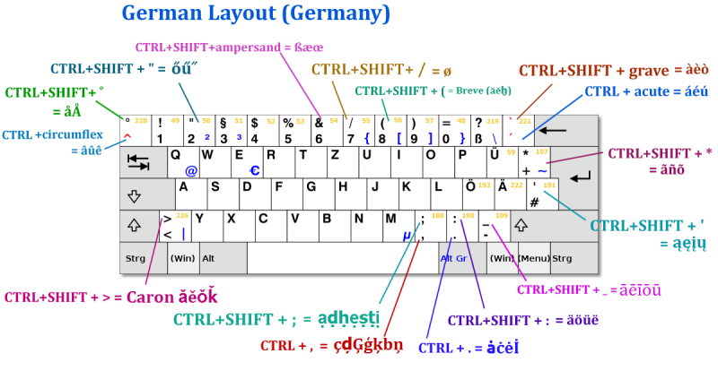
Russian is difficult as it supports 2 different sets of meanings for each key...
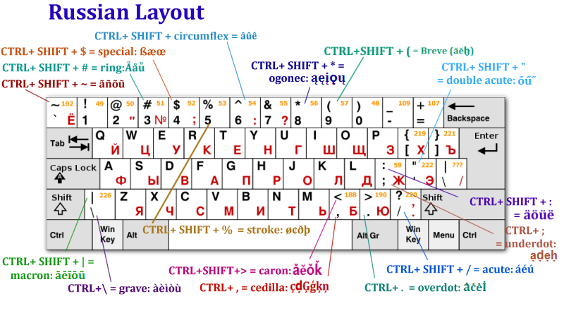
Swedish layout
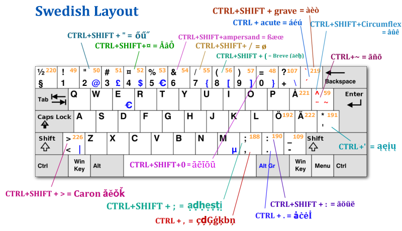
Hungarian layout - see [Bug 26263]
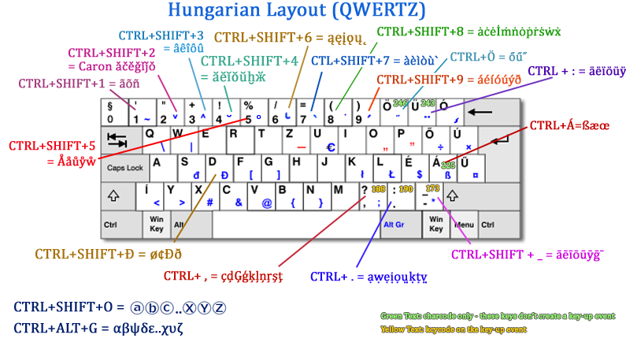
Spanish layout - see [Bug 26309]
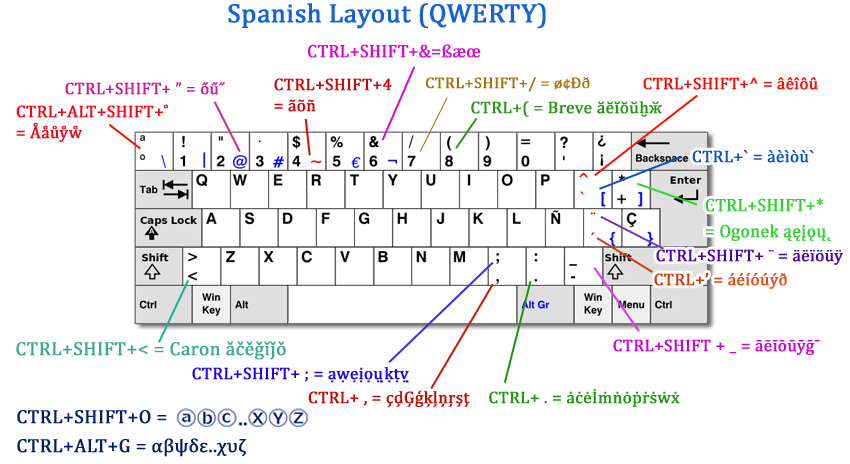